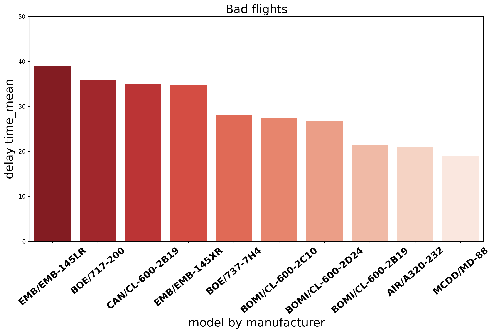
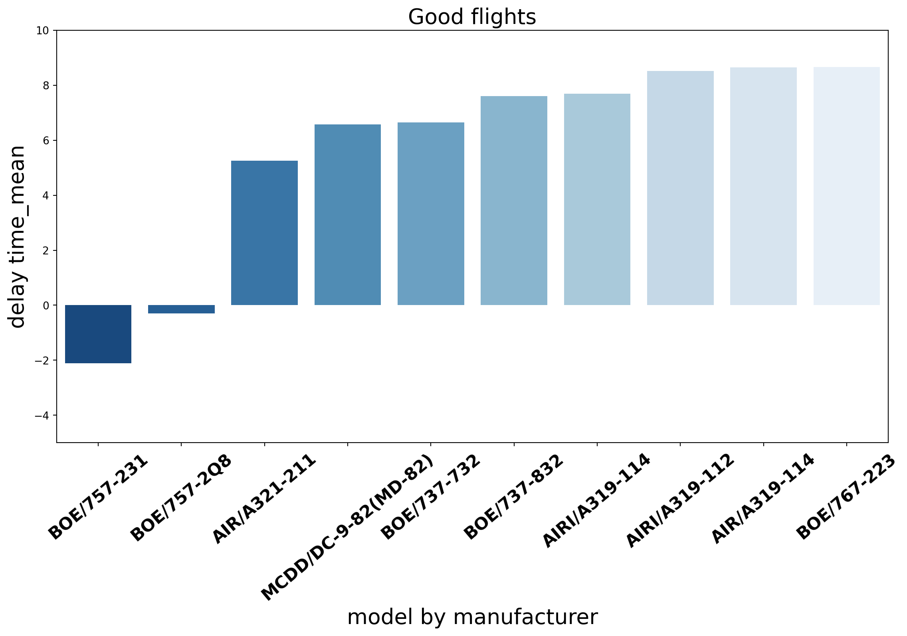

<class 'pandas.core.series.Series'>
RangeIndex: 284170 entries, 0 to 284169
Series name: datetime
Non-Null Count Dtype
-------------- -----
284170 non-null datetime64[ns]
dtypes: datetime64[ns](1)
memory usage: 2.2 MB.
분석 주제
- 본 분석에서는 flights와 planes 데이터를 병합하여 특정 변수 간의 관계를 분석합니다.
1. 사용 데이터
| 데이터셋 | 설명 |
|---|---|
flights.csv |
항공편 정보 (출발지, 도착지, 지연 시간 등) |
planes.csv |
항공기 정보 (제조 연도, 모델 등) |
airlines.csv |
항공사 코드 및 항공사명 정보 |
2. 데이터 전처리
날짜 처리 (datetime 변환)
문자열 처리 (항공사 코드 -> 이름 매핑)
<class 'pandas.core.frame.DataFrame'>
RangeIndex: 284170 entries, 0 to 284169
Data columns (total 29 columns):
# Column Non-Null Count Dtype
--- ------ -------------- -----
0 year 284170 non-null int64
1 month 284170 non-null int64
2 day 284170 non-null int64
3 dep_time 279971 non-null float64
4 sched_dep_time 284170 non-null int64
5 dep_delay 279971 non-null float64
6 arr_time 279619 non-null float64
7 sched_arr_time 284170 non-null int64
8 arr_delay 279017 non-null float64
9 carrier 284170 non-null object
10 flight 284170 non-null int64
11 tailnum 284170 non-null object
12 origin 284170 non-null object
13 dest 284170 non-null object
14 air_time 279017 non-null float64
15 distance 284170 non-null int64
16 hour 284170 non-null int64
17 minute 284170 non-null int64
18 time_hour 284170 non-null object
19 manuf_year 278864 non-null float64
20 type 284170 non-null object
21 manufacturer 284170 non-null object
22 model 284170 non-null object
23 engines 284170 non-null int64
24 seats 284170 non-null int64
25 speed 963 non-null float64
26 engine 284170 non-null object
27 datetime 284170 non-null datetime64[ns]
28 name 284170 non-null object
dtypes: datetime64[ns](1), float64(7), int64(11), object(10)
memory usage: 62.9+ MB
None3. 분석
총 3개의 분석을 진행합니다.
- 3.1 항공사별 출발 및 도착 지연 시간 분석
- 3.2 제작 연도별 기체 성능 분석
- 3.3 특정 노선의 지연 시간 분석
3.1 항공사별 출발 및 도착 지연 시간 분석 ✈️
분석 목적
- 항공사별 출발(
dep_delay) 및 도착 지연(arr_delay) 시간의 관계 분석
- 출발이 늦으면 도착도 늦을까?
데이터 시각화

3.2 제조사별 엔진 Delay 시간 분석 🛩️
분석 목적
- 항공기 엔진 제조사중 가장 출발 지연에 가장 많은 영향을 끼치는 것은?
- 가장 유명한 Boeing이 지연이 많을 것이다.
데이터 전처리
Code
manufacturer model mean count
0 AIRBUS INDUSTRIE A330-223 452.0000 1
1 BOEING 747-451 252.0000 1
2 BOEING 757-351 155.2500 4
3 BOEING 777-224 91.0000 4
4 GULFSTREAM AEROSPACE G-IV 87.5000 12
.. ... ... ... ...
142 AIRBUS A330-323 -19.0000 1
143 BOEING 757-212 -19.0000 2
144 BOEING 737-524 -20.2500 4
145 BOEING 737-8FH -24.0625 16
146 BOEING 737-3A4 -25.0000 1
[147 rows x 4 columns]- 도착 지연시간과 출발 지연시간을 더하여 하나의 데이터 생성
- 제조사별 모델을 그룹화하여 평균과 비행 횟수를 구함
- 이때 비행 횟수가 적은 데이터는 다른 영향이 있을거라 생각함
데이터 전처리
Code
manufacturer model mean count
18 EMBRAER EMB-145LR 38.964306 26475
22 BOEING 717-200 35.852358 3075
23 CANADAIR CL-600-2B19 34.992627 1492
24 EMBRAER EMB-145XR 34.796349 13312
37 BOEING 737-7H4 28.022783 10227
38 BOMBARDIER INC CL-600-2C10 27.439327 7903
40 BOMBARDIER INC CL-600-2D24 26.665237 11656
52 BOMBARDIER INC CL-600-2B19 21.422945 7871
54 AIRBUS A320-232 20.840146 30972
59 MCDONNELL DOUGLAS CORPORATION MD-88 19.028067 1247
manufacturer model mean count
128 BOEING 757-231 -2.109045 2366
122 BOEING 757-2Q8 -0.293210 2268
108 AIRBUS A321-211 5.255715 1181
104 MCDONNELL DOUGLAS DC-9-82(MD-82) 6.566601 2545
103 BOEING 737-732 6.639552 1340
102 BOEING 737-832 7.598017 8672
101 AIRBUS INDUSTRIE A319-114 7.683273 4938
99 AIRBUS INDUSTRIE A319-112 8.519237 5822
98 AIRBUS A319-114 8.647260 4672
97 BOEING 767-223 8.659091 4224- 운항 횟수가 적은 운행은 다른 영향으로 지연이 되었을 거라 판단.
- 1000회 이상 운항된 모델들로만 필터링 실시
- 기존 147개의 데이터에서 38개의 데이터로 축소됨
데이터 전처리
Code
delay_time_top['manu_model'] = delay_time_top['manufacturer'].apply(lambda x: x[:3] + (x.split()[1][0] if len(x.split()) > 1 else '')) + "/" + delay_time_top['model']
delay_time_bottom['manu_model'] = delay_time_bottom['manufacturer'].apply(lambda x: x[:3] + (x.split()[1][0] if len(x.split()) > 1 else '')) + "/" + delay_time_bottom['model']
print(delay_time_top)
print(delay_time_bottom) manufacturer model mean count \
18 EMBRAER EMB-145LR 38.964306 26475
22 BOEING 717-200 35.852358 3075
23 CANADAIR CL-600-2B19 34.992627 1492
24 EMBRAER EMB-145XR 34.796349 13312
37 BOEING 737-7H4 28.022783 10227
38 BOMBARDIER INC CL-600-2C10 27.439327 7903
40 BOMBARDIER INC CL-600-2D24 26.665237 11656
52 BOMBARDIER INC CL-600-2B19 21.422945 7871
54 AIRBUS A320-232 20.840146 30972
59 MCDONNELL DOUGLAS CORPORATION MD-88 19.028067 1247
manu_model
18 EMB/EMB-145LR
22 BOE/717-200
23 CAN/CL-600-2B19
24 EMB/EMB-145XR
37 BOE/737-7H4
38 BOMI/CL-600-2C10
40 BOMI/CL-600-2D24
52 BOMI/CL-600-2B19
54 AIR/A320-232
59 MCDD/MD-88
manufacturer model mean count manu_model
128 BOEING 757-231 -2.109045 2366 BOE/757-231
122 BOEING 757-2Q8 -0.293210 2268 BOE/757-2Q8
108 AIRBUS A321-211 5.255715 1181 AIR/A321-211
104 MCDONNELL DOUGLAS DC-9-82(MD-82) 6.566601 2545 MCDD/DC-9-82(MD-82)
103 BOEING 737-732 6.639552 1340 BOE/737-732
102 BOEING 737-832 7.598017 8672 BOE/737-832
101 AIRBUS INDUSTRIE A319-114 7.683273 4938 AIRI/A319-114
99 AIRBUS INDUSTRIE A319-112 8.519237 5822 AIRI/A319-112
98 AIRBUS A319-114 8.647260 4672 AIR/A319-114
97 BOEING 767-223 8.659091 4224 BOE/767-223- 그래프 생성시 제조사, 모델명을 한눈에 알기 위해
- 제조사 앞글자 3개와 모델명 합친 열 manu_model을 생성


결론
- 가장 신뢰성이 떨어지는 기종 Top3는 ‘EMB’사의’EMB-145LR’기종, ‘BOE’사의’717-200’기종 , ‘CAN’사의’CL-600-2B19’기종이다
- 또한 제조사만 봤을때 ‘BOMI’사 4대,’EMB’사 2대 , ’BOE’사 2대가 나타나여 이 제조사들의 model이 지연이 잘되는 걸 알 수 있다.
- 반대로 신뢰성이 높은 기종 Top3는 ‘BOE’사의’757-231’기종, ‘BOE’사의’757-2Q8’ 기종, ‘AIR’사의’A321-211’기종 이다.
- 또한 제조사만 봤을때
3.3 특정 노선의 지연 시간 분석 🌍
분석 목적
- 특정 노선(예: JFK → LAX)의 출발 및 도착 지연 시간이 특별한 패턴을 보일까?
- 특정 시간대에 지연이 집중되는가?
데이터 시각화

결론
1️⃣ 항공사별로 출발 지연과 도착 지연의 상관관계가 다름
2️⃣ 오래된 기체일수록 출발 및 도착 지연 시간이 증가하는 경향
3️⃣ 특정 노선에서는 출발 시간대에 따라 지연 패턴이 다름

Team 6 | LS BigData School | 2025